Contents
Cellular Automata Caves
A version of Cellular Automata that can be used for
making cave or island shapes. This one isn't too
difficult to do, but there are some tricks to it.
It is done by looping through each pixel, and applying
the following rule to it. if there are more than the
threshhold of the same type pixels ajacent to it
(diagonals included), the current pixel is unchanged,
if the number of different pixels is more than the
threshold, its type is swapped. Set the threshold to 4
or 5 for best results making the shapes above, but some
interesting shapes can be made by using other numbers
as well. You have to leave a buffer around the edge of
the pattern as well, and preform the rule excluding the
edge peices. This can also be used to determine what the
outside counts as, I generally prefer to leave the edges
as 'off'.

The process is started by randomly filling the grid with 'on'
and 'off' cells. You can use a random chance (I tended to use 47%)
or use some other method like perlin noise to distribute them.
Then the above rule is applied multiple times to the cells, 4-5
times is usually enough for decent results but you might want to
do it as many as 16 times.
Below you can see a pesudocode explanation:
generating_initial_noise = true;
applying_the_rule = false;
repeat ammount_of_detail {
for every_pixel {
if generating_initial_noise {
this_pixel.type = xx%_chance // Chance of being on or off
}
if applying_the_rule {
neighbors = count_ajacent_pixels_of_same(type);
if neighbors > threshold {
this_pixel.type = !this_pixel.type; // Swap the type
}
draw_to_display();
}
}
generating_initial_noise = false;
applying_the_rule = true;
}
Resources
Logistic Map
A population modelling equation that mostly stabilises as a
consistent value or a cycle of values, the program takes the equation,
x ⇌ rx(1 - x), plots the results
of a few hundred iterations on one column of the diagram, and
then increases the variable r (the reproductive number) by a
small amount before repeating the process for the next column.
The top variation has the equation plotted only after the results
stabilise (ignore_first_values = true), and the bottom version
includes the points before the stabilisation as well
(ignore_first_values = false).

var r = 0;
var starting_poluation = 0.4; // The starting population doesn't matter too much
var graph = new Image();
const ignore_first_values = true;
var i = 0;
repeat ammount_of_columns { // I used 4,700 - you can use for loop here instead
var population = starting_poluation;
if ignore_first_values { // This part is optional
repeat a_large_number { // I used 500
population = run_equation(population);
}
}
repeat ammount_of_detail_per_column { // I used 50
population = run_equation(population);
draw_to_image(x = i, y = population * scale);
}
r += horizontal_detail; // I used 0.0009
i++;
}
save_the_image();
Resources
Simple Inverse Kinematics
This version of inverse kinematics isn't the most accurate,
but it's easier so understand compared to the other version,
and has the benefit of being able to bend each individual
joint in any direction, at the cost of not being able to control
that direction.
It works by looping through each segment from front to back, and for
each one, pointing in the direction of it's target (either the main
target or the end of the previous segment) and moving one end to meet
it there. It then moves the whole thing back to the anchored position.
for i, loop_through_all_segments { // Start with the 'hand' end
update_target_position();
if i != 0 {
set_target_to_the_end_of_next_segment[segment i-1];
}
// Move to where second_end == target
first_end = target - sin/cos(angle_to_target) * segment_length;
second_end = target;
}
find_distance_to_anchor();
loop_through_and_move_everything_back();
draw_each_segment_as_line_from(first_end, to second_end);
Resources
Mandlebrot Set
This one has a little bit of fancy math involved,
but it's actually not that bad once you understand it.
The Mandlebrot set is generated using only one equation:
z ⇌ z2 + c
Where
z & c are complex numbers.
z is the number to be ckecked against and
c is the position of the point to be checked.
Complex Numbers
Complex numbers are an incredibly interesting math concept, but
for our purposes, they're like a Vector2
(usually written as x + yi, where i is the
imaginary unit (but you can ignore that when coding)) that has a special way you
need to operate on it. Below are the special
methods relevant to this project:
ComplexNumber = (realPart + imaginaryPart * i)
(a + b*i) + (c + d*i) = (a+c + b+d * i)
(a + b*i) * (c + d*i) = (a*c - b*d + a*d + b*c * i)
Back to the Mandlebrot Set
Each point of the Mandlebrot set is a result of a test based on the equation above,
run 200-300 times, and mapped to the screen.
(the set starts at -2 and ends at 2 on both axes)
Basically for every pixel you run the equation a few hundred times, and test the
resulting numbers distance to (0,0) to see if it's greater than 2, if it is,
you can color that point the background color, otherwise, it's in the set!
you can color it the set color (The Black Part)!

What About the Colored Part?
To get the colors on the outside of the set,
you need to count how many iterations it took to get that far away
(you can just return the 'i' in your for loop when the result's distance to
the origin is > 2) and color the outside pixels based on that number.
Here's a trick to color it anything you want:
i = the_number_of_iterations_before_dist_exceeded_2
color = rgb(i * red, i * green, i * blue)
The Final Code
Here is what the final program should look like, what else can you change?
What happens when you change the power of z?
for (x, y) every_pixel { // keep x and y between 2 and -2
c = new ComplexNumber(x, y)
x = new ComplexNumber(0, 0)
color = iterate()
color = rgb(color * red, color * green, color * blue)
draw_pixel(x, y, color)
}
function iterate() {
repeat 200-300 times {
c = ComplexNumber.pow(z, 2) + c
if dist(c, (0,0)) >= 2 {
return i
}
return 0
}
}
Resources